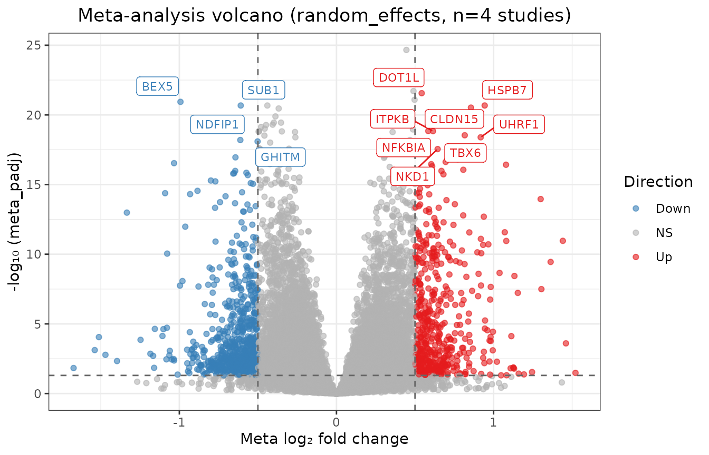
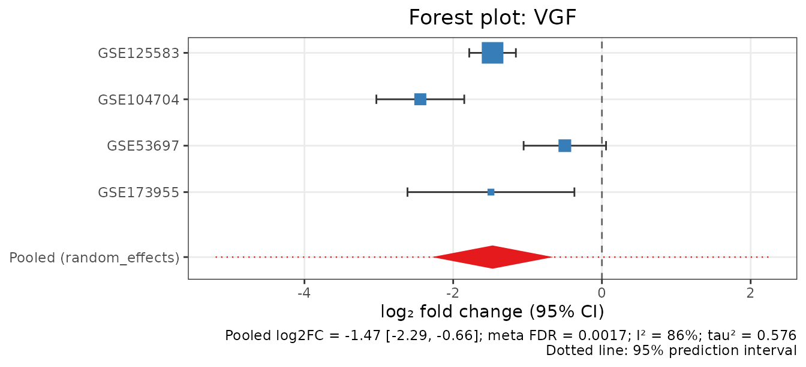
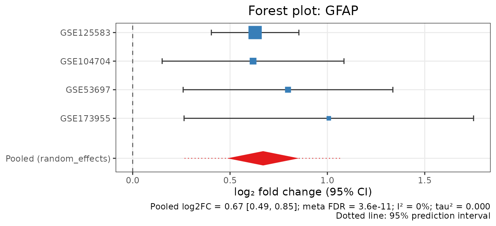

Getting started with metaXpress
Md. Jubayer Hossain
2026-10-14
Source:vignettes/quickstart.Rmd
quickstart.RmdmetaXpress combines bulk RNA-seq differential expression (DE) results from several independent studies into one gene-level meta-analysis. Every code chunk in this vignette runs on real public data when the vignette is built.
The workflow has three steps:
-
Per-study DE.
mx_de()runs DESeq2, edgeR or limma-voom separately in each study, from raw counts. -
Meta-analysis.
mx_meta()pools the per-study log2 fold changes (random effects by default) or combines p-values. - Interpretation. Heterogeneity, robustness, visualisation and pathway analysis.
1. Per-study differential expression
mx_de() takes a metaXpressStudy, which is a
SummarizedExperiment with raw counts and a
condition column. Any SummarizedExperiment
converts with mx_from_se().
The example uses the airway smooth-muscle experiment of Himes et al. (2014; GEO GSE52778): 4 donors, each treated with dexamethasone or left untreated.
data("airway", package = "airway")
study <- mx_from_se(airway, condition_col = "dex", accession = "GSE52778")
study <- study[rowSums(SummarizedExperiment::assay(study)) >= 10, ]
# Adjust for donor (paired design); fold changes are trt / untrt
study <- mx_de(study, formula = ~ cell + condition,
contrast = c("trt", "untrt"))
de <- study@de_result
head(de[order(de$padj), c("gene_id", "log2FC", "lfcSE", "stat", "padj")])
#> gene_id log2FC lfcSE stat padj
#> 8109 ENSG00000152583 4.574967 0.1842414 24.83137 7.412355e-132
#> 9865 ENSG00000165995 3.291099 0.1330527 24.73530 4.024187e-131
#> 4359 ENSG00000120129 2.947850 0.1218764 24.18720 1.823540e-125
#> 2214 ENSG00000101347 3.767022 0.1559919 24.14882 3.463342e-125
#> 13405 ENSG00000189221 3.353655 0.1421810 23.58722 1.879910e-119
#> 14808 ENSG00000211445 3.730439 0.1663984 22.41872 7.768964e-108Every DE engine returns the same columns. log2FC and
lfcSE are on the log2 scale, stat is a signed
z-score, and n_case/n_control record the group
sizes used for weighting. Shrunken fold changes
(shrink = "apeglm") are added as a separate column, because
inverse-variance meta-analysis needs the unshrunken estimate together
with its standard error.
2. Meta-analysis of four Alzheimer’s disease cohorts
The package ships per-study DESeq2 results from four
independent Alzheimer’s disease (AD) vs control
post-mortem brain cohorts. All four were quantified by the same NCBI GEO
RNA-seq pipeline, so alignment, annotation and counting are identical
across them. The script that rebuilds the file from GEO is
system.file("scripts", "make_ad_brain_extdata.R", package = "metaXpress").
ad <- readRDS(system.file("extdata", "ad_brain_de.rds",
package = "metaXpress"))
ad$studies
#> accession region n_AD n_control n_genes n_DEG_fdr05
#> 1 GSE125583 Fusiform gyrus 218 70 16126 10164
#> 2 GSE104704 Lateral temporal lobe 12 10 15930 1670
#> 3 GSE53697 Dorsolateral PFC 6 6 16029 1
#> 4 GSE173955 Hippocampus 8 10 15905 4149
#> formula
#> 1 ~sex + condition
#> 2 ~condition
#> 3 ~condition
#> 4 ~condition
de_results <- ad$de_resultsCheck that the studies agree in direction
Before pooling, make sure that every study encodes AD vs control in the same orientation. A negative correlation would mean a flipped contrast.
mx_study_concordance(de_results)
#> study_1 study_2 n_genes correlation sign_agreement flag
#> 1 GSE125583 GSE104704 10096 0.75221718 0.8502377 ok
#> 2 GSE125583 GSE53697 9841 0.09469926 0.5314501 weak concordance
#> 3 GSE125583 GSE173955 10722 0.80043218 0.8740907 ok
#> 4 GSE104704 GSE53697 1654 0.38697724 0.6813785 ok
#> 5 GSE104704 GSE173955 5062 0.67807809 0.8609245 ok
#> 6 GSE53697 GSE173955 4078 0.29992966 0.6066699 okThe fold changes of three cohorts correlate strongly (r = 0.68 to 0.80). The small dorsolateral prefrontal cortex study (GSE53697, 6 vs 6) has only one significant gene of its own, so its concordance is weak but not negative.
Pool the effects
res <- mx_meta(de_results, method = "random_effects", tau_method = "REML")
res
#> metaXpressResult
#> Method : random_effects
#> Studies : 4
#> Genes : 16290
#> Sig genes : 7491 (meta_padj <= 0.05)
mt <- res@meta_table
sig <- mt[mt$meta_padj <= 0.05, ]
nrow(sig)
#> [1] 7491
head(mt[order(mt$meta_pvalue),
c("gene_id", "meta_log2FC", "ci_lower", "ci_upper",
"pi_lower", "pi_upper", "meta_padj", "i_squared")], 10)
#> gene_id meta_log2FC ci_lower ci_upper pi_lower pi_upper
#> 7674 EHMT1 0.4451290 0.3679108 0.5223471 0.2756141 0.6146438
#> 3486 NDUFB5 -0.4725524 -0.5587443 -0.3863605 -0.6617669 -0.2833379
#> 6680 IKBKB 0.4901355 0.3993599 0.5809111 0.2908585 0.6894125
#> 13287 DOT1L 0.5425005 0.4414538 0.6435472 -0.1125730 1.1975740
#> 6201 LRCH4 0.4970347 0.4033509 0.5907185 0.2913733 0.7026960
#> 15690 BEX5 -0.9928233 -1.1808633 -0.8047833 -1.4056221 -0.5800245
#> 161 HSPB7 0.9433530 0.7632374 1.1234686 0.5479504 1.3387556
#> 9263 COPS7A -0.4399933 -0.5240303 -0.3559563 -0.6244773 -0.2555092
#> 4255 SUB1 -0.6091167 -0.7255770 -0.4926564 -0.8647787 -0.3534547
#> 6224 CLDN15 0.8559815 0.6916133 1.0203498 0.4951486 1.2168145
#> meta_padj i_squared
#> 7674 2.178525e-25 55.56881
#> 3486 5.061157e-23 28.43886
#> 6680 1.947134e-22 39.57025
#> 13287 2.766083e-22 0.00000
#> 6201 8.206771e-22 56.82003
#> 15690 1.156312e-21 41.02107
#> 161 2.117688e-21 0.00000
#> 9263 2.117688e-21 27.71732
#> 4255 2.117688e-21 16.83430
#> 6224 3.007809e-21 0.00000For every gene the table reports:
- the pooled log2 fold change with its 95% confidence interval;
- tau² and I², which measure between-study heterogeneity;
- the 95% prediction interval (
pi_lower,pi_upper), the range in which the effect in a new cohort is expected to fall.
When the prediction interval excludes zero, the effect is reproducible across settings and not only on average.
mx_volcano(res, padj_threshold = 0.05, lfc_threshold = 0.5, label_top = 12)
Established AD genes
The neurosecretory protein VGF and the astrocyte marker GFAP are among the most replicated AD brain changes:
mx_forest("VGF", de_results, res)
mx_forest("GFAP", de_results, res)
VGF is down-regulated in every cohort, but its I² is high and its prediction interval crosses zero: the size of the loss varies by brain region. GFAP is homogeneous (I² = 0) and its prediction interval excludes zero.
How robust is the signature?
mx_sensitivity() repeats the analysis once without each
study in turn.
loo <- mx_sensitivity(de_results, method = "random_effects")
vapply(loo, function(r) sum(r@meta_table$meta_padj <= 0.05), integer(1))
#> GSE125583 GSE104704 GSE53697 GSE173955
#> 1550 5541 8123 6256
rob <- attr(loo, "robustness")
table(robust = rob$frac_loo_sig[rob$full_padj <= 0.05] == 1)
#> robust
#> FALSE TRUE
#> 6252 1239Dropping the large fusiform-gyrus cohort (GSE125583, n = 288) removes most of the significant genes. Report the subset that survives every omission as the robust core signature.
3. Pathways
GSEA ranks genes by the signed meta-analysis z-score (fgsea, MSigDB Hallmarks):
res <- mx_pathway_meta(res, db = "Hallmarks")
head(res@pathway_result[, c("pathway_id", "NES", "padj")], 8)
#> pathway_id NES padj
#> 36 HALLMARK_OXIDATIVE_PHOSPHORYLATION -3.077706 4.911417e-31
#> 32 HALLMARK_MYC_TARGETS_V1 -1.991422 1.638455e-06
#> 45 HALLMARK_TNFA_SIGNALING_VIA_NFKB 1.687966 1.134809e-03
#> 24 HALLMARK_IL6_JAK_STAT3_SIGNALING 1.835387 2.403652e-03
#> 37 HALLMARK_P53_PATHWAY 1.569513 3.566265e-03
#> 25 HALLMARK_INFLAMMATORY_RESPONSE 1.588698 4.989763e-03
#> 30 HALLMARK_MITOTIC_SPINDLE 1.510185 7.988942e-03
#> 13 HALLMARK_E2F_TARGETS 1.440066 1.429704e-02Oxidative phosphorylation is down-regulated, and inflammatory, TNF/NF-kB and IL6/JAK/STAT3 signalling are up-regulated. This matches the mitochondrial and neuroinflammatory components of AD pathology.
Next steps
-
vignette("case_study", package = "metaXpress"): the full AD analysis, covering method choice, heterogeneity, the Hartung-Knapp adjustment, cross-study pathway meta-analysis and reporting. -
vignette("full_workflow", package = "metaXpress"): starting from GEO accessions withmx_fetch_geo().
sessionInfo()
#> R version 4.6.1 (2026-06-24)
#> Platform: x86_64-pc-linux-gnu
#> Running under: Ubuntu 24.04.5 LTS
#>
#> Matrix products: default
#> BLAS: /usr/lib/x86_64-linux-gnu/openblas-pthread/libblas.so.3
#> LAPACK: /usr/lib/x86_64-linux-gnu/openblas-pthread/libopenblasp-r0.3.26.so; LAPACK version 3.12.0
#>
#> locale:
#> [1] LC_CTYPE=C.UTF-8 LC_NUMERIC=C LC_TIME=C.UTF-8
#> [4] LC_COLLATE=C.UTF-8 LC_MONETARY=C.UTF-8 LC_MESSAGES=C.UTF-8
#> [7] LC_PAPER=C.UTF-8 LC_NAME=C LC_ADDRESS=C
#> [10] LC_TELEPHONE=C LC_MEASUREMENT=C.UTF-8 LC_IDENTIFICATION=C
#>
#> time zone: UTC
#> tzcode source: system (glibc)
#>
#> attached base packages:
#> [1] stats graphics grDevices utils datasets methods base
#>
#> other attached packages:
#> [1] metaXpress_0.99.1
#>
#> loaded via a namespace (and not attached):
#> [1] SummarizedExperiment_1.42.0 fastmatch_1.1-8
#> [3] gtable_0.3.6 xfun_0.61
#> [5] bslib_0.12.0 ggplot2_4.0.3
#> [7] htmlwidgets_1.6.4 ggrepel_0.9.8
#> [9] Biobase_2.72.0 lattice_0.22-9
#> [11] vctrs_0.7.3 tools_4.6.1
#> [13] generics_0.1.4 stats4_4.6.1
#> [15] parallel_4.6.1 tibble_3.3.1
#> [17] airway_1.32.0 pkgconfig_2.0.3
#> [19] Matrix_1.7-5 data.table_1.18.6.1
#> [21] RColorBrewer_1.1-3 S7_0.2.2
#> [23] desc_1.4.3 S4Vectors_0.50.3
#> [25] assertthat_0.2.1 lifecycle_1.0.5
#> [27] compiler_4.6.1 farver_2.1.2
#> [29] textshaping_1.0.5 fgsea_1.38.0
#> [31] DESeq2_1.52.0 Seqinfo_1.2.0
#> [33] codetools_0.2-20 htmltools_0.5.9
#> [35] sass_0.4.10 yaml_2.3.12
#> [37] pillar_1.11.1 pkgdown_2.2.1
#> [39] jquerylib_0.1.4 BiocParallel_1.46.0
#> [41] cachem_1.1.0 DelayedArray_0.38.2
#> [43] abind_1.4-8 locfit_1.5-9.12
#> [45] tidyselect_1.2.1 digest_0.6.39
#> [47] dplyr_1.2.1 labeling_0.4.3
#> [49] cowplot_1.2.0 fastmap_1.2.0
#> [51] grid_4.6.1 cli_3.6.6
#> [53] SparseArray_1.12.3 magrittr_2.0.5
#> [55] S4Arrays_1.12.1 withr_3.0.3
#> [57] scales_1.4.0 rmarkdown_2.32
#> [59] XVector_0.52.0 matrixStats_1.5.0
#> [61] otel_0.2.0 ragg_1.5.2
#> [63] evaluate_1.0.5 knitr_1.52
#> [65] GenomicRanges_1.64.0 IRanges_2.46.0
#> [67] msigdbr_26.1.1 rlang_1.3.0
#> [69] Rcpp_1.1.2 glue_1.8.1
#> [71] BiocGenerics_0.58.1 jsonlite_2.0.0
#> [73] R6_2.6.1 MatrixGenerics_1.24.0
#> [75] systemfonts_1.3.2 fs_2.1.0